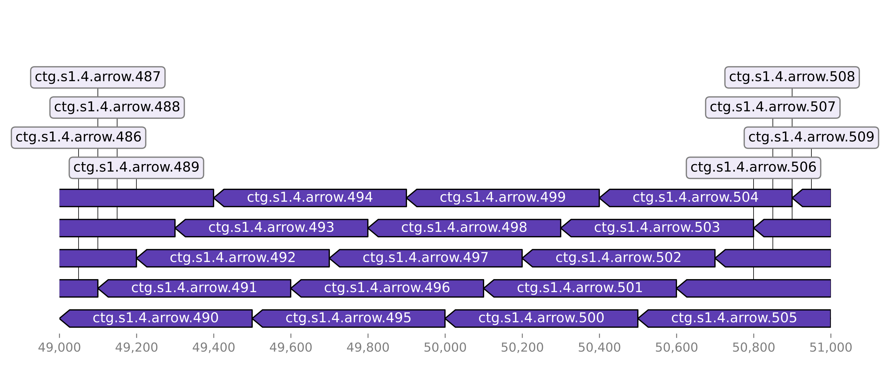

Welcome to StrucFollower
Introduction
This package helps you to identify deleted or inserted sequences in evolved bacterial strains.
For example if you have evolved antibiotic resistance to a bacterial strain this package helps you to identify sequences which were integrated or deleted in the genome during evolution. With it's support for GenBank files StrucFollower also tells you which products were inserted or deleted. StrucFollower also generates visualizations of alignments of inserted or deleted sequences which can help in assessing the quality of the detected sequence.
Additionally if you evolved your bacteria in co-culture with other bacterial strains, StrucFollower has a feature which identifies sequences which were integrated in the genome from the other bacterial strains of the co-culture.
This package has very few dependencies and because of it's simple design it's fast and reliable.
Installation
This package requires SAMtools>=1.11 and minimap2 in your PATH. If you don't have those dependencies installed already you can install them with conda:
conda install -c bioconda samtools
conda install -c bioconda minimap2
StrucFollower can be installed with pip:
pip install git+https://github.com/nahanoo/deletion_detection.git
After installing with pip StrucFolower creates three console scripts which are independently callable:
detect_deletions- Detects deleted sequences.detect_insertions- Detects inserted sequences.hgt- Detects sequences integrated in the genome from other bacterial strains.
Methods
Input data
StrucFollower was developed and tested with PacBio long-read sequencing data and it's recommended to use high-quality assemblies. Alternatively to PacBio assemblies, hybrid-assembled genomes with Nanopre and Illumina data should work as well.
Background
All three sub-modules have a similar underlying mechanism. As an input the GenBank or the FASTA file of the ancestral strain and the mutated strain are required. Depending on the sub-module, either the ancestral or the mutated genome is chunked into smaller sequences using a sliding window. Typically a window size of 500 base-pairs and start-shift of 100 base-pairs is used. Below you can see an example of chunked sequences aligned to the genome itself:

This chunks are then aligned ether to the ancestral or the mutated genome. For a more detailed description of the alignment check the according sub-module description.
Deletion Detection
Background
To detect deletions StrucFollower chunks the mutated genome into smaller chunks. These chunks are aligned to the ancestral genome. The alignment is scanned for areas with no coverage. In areas with no coverage the given sequence is present in the ancestral strain but absent the the mutated strain.
In order to find the positions of the deleted sequences in the mutated strain, the area around the identified sequence in the ancestral strain is extracted and aligned to the mutated strain. Based on this alignment the positions in the mutated genome can be identified.
Usage
usage: detect_deletions [-h] [--plot] ancestral mutant out_dir
Detect insertions in evolved bacterial strains.
positional arguments:
ancestral fasta file of the ancestral strain
mutant genbank file of the mutated strain.
out_dir output directory
optional arguments:
-h, --help show this help message and exit
--plot plots alignment of deletions